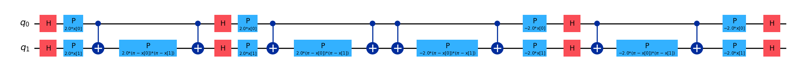
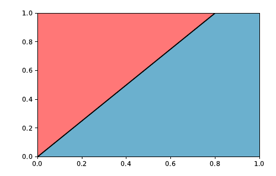
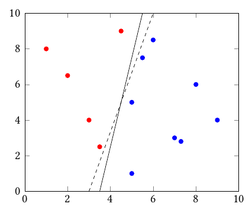
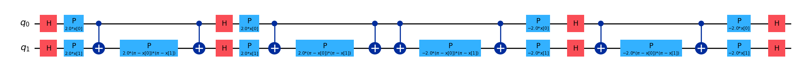
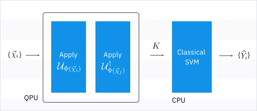

from qiskit.circuit.library import ZZFeatureMap
feature_map = ZZFeatureMap(2)
kernel = feature_map.compose(feature_map.inverse())
kernel.decompose().draw('mpl', fold = 150)
Before going into details of what quantum kernels might be let’s discuss the simplest classifier one could build. If we re provided with one number we could build a classifier saying if its negative or positive. Or if we go to a \(\mathcal{R}^2\) example we would like to know if our samples belong to the pink or blue category.

We could try to draw the line that places our samples into the corresponding category \(f(x,y) = w_x x + w_y y + b\). Actually there could be more than one option for this problem to be solved.

We would like to find the hyperplane that better splits the two groups, meaning that the margin from the line to the data points is maximal. Something like
\[ \min \frac{1}{2}\|w\|^2 + C\sum_j \epsilon_j \]
\[ \text{s.t.}\quad y_j(w.x_j + b) \ge 1 - \epsilon_j, \quad \epsilon_j \ge 0 \]
being \(C\) a hyperparameter of our choosing. The main problem about this setup is that it can only perform linear separations. We could perform the kernel trick which consist of mapping the data space into a higher dimensional space in order to compute the inner product of the samples without actual computation of the coordinates so that a linear separation would render a low-dimensional non-linear classifier.
Kernel functions are mappers of members of a non-empty set (\(x \in \mathbb{X}\)) into a real value
\[ K(x_i, x_j) \ge 0 \]
being able to map those to a distance value (but not equivalent to distance measurement) between the two samples being evaluated.
Essentially, given that there exists a way to map data points into a quantum feature space and the inner product operation can be performed in similar manner by undoing the actions of the first feature map, we could build a quantum kernel of the form
\[ k(x_i, x_j) = \langle\psi(x_i)|\psi(x_j)\rangle \]
considering \(\psi(x) = \Psi(x)|0\rangle\) where \(\Psi(x)\) is a quantum feature map like the ones presented before. By taking its conjugate
\[ k(x_i, x_j) = \langle 0 |\Psi^{\dagger}(x)|\Psi(x_j)|0\rangle \]
which can be easily performed by flipping the original circuit backwards and adding it to the initial feature map.
from qiskit.circuit.library import ZZFeatureMap
feature_map = ZZFeatureMap(2)
kernel = feature_map.compose(feature_map.inverse())
kernel.decompose().draw('mpl', fold = 150)
By computing the number of times we get \(|0\rangle^n\) after this execution we can get the closeness of these to feature map prepared states. If orthogonal states are evaluated (ex. \(\langle 0 | 1\rangle\)) then we can assume their states to be as distant as possible within the Hilbert space.
This way we could easily compute the fidelity between states on a higher dimensional feature space by just running this exercise of each sample pair (\(O(N^2)\)) in what it is called a Fidelity Kernel (Hubregtsen et al. 2022).
Fidelity comes from the formula \[ F(\rho, \sigma) = \|\langle\psi_{\rho}|\psi_{\sigma}\rangle\|^2 \] where both states are considered to be pure. for the mixed state case, fidelity differs.
Then, adding a classical classification method that using that measure of distance can separate between both classes, we would obtain a hybrid quantum-classical method. In fact, by chaining a Support Vector Machine classifier we would have obtained the Quantum Support Vector Classifier (Rebentrost, Mohseni, and Lloyd 2014).
